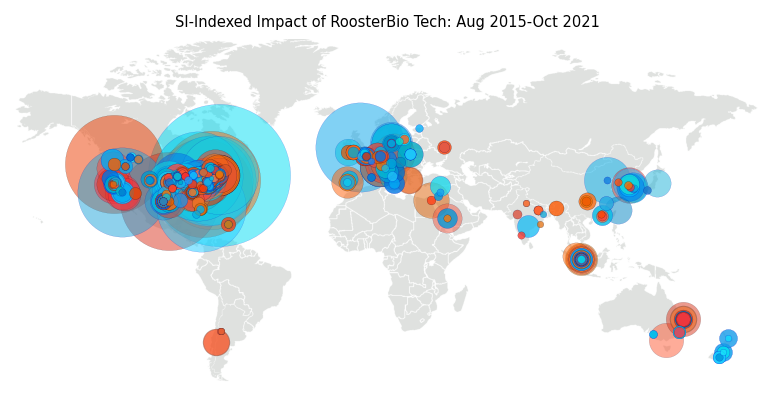
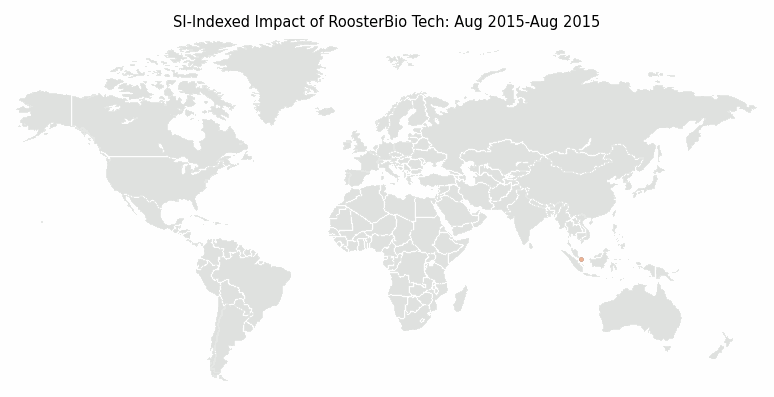
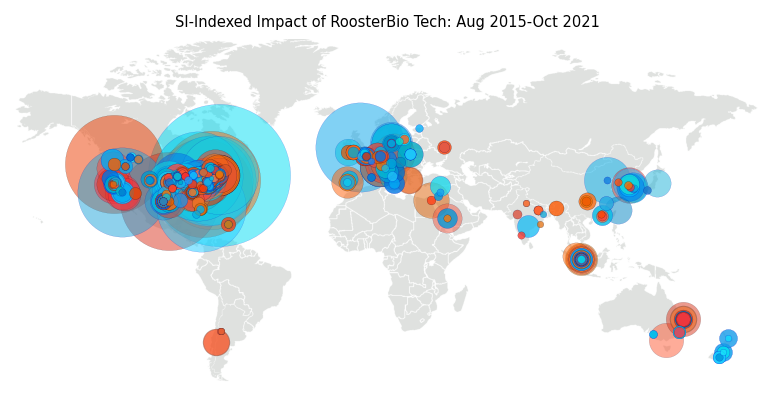
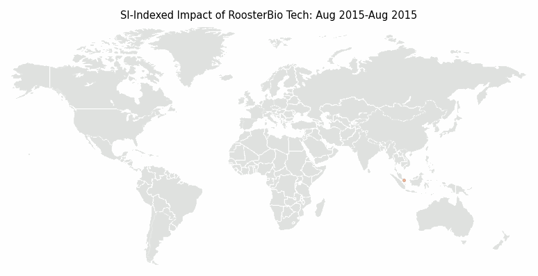

dpi = 150
 dpi = 300
dpi = 600

dpi = 1200


Jessica E. Snyder
September 2021
Who uses RoosterBio tech? Researchers across the globe. Let's map it. RoosterBio cells and media have a global footprint in the corpus of peer-reviewed literature. The map identifies author affiliations for 266 publications that cite RoosterBio technology with a cumulative 5700 citations. The gif begins in August 2015. Bubbles appear on the map over all co-authoring institutions on the month of publication and grow linearly according to the number of citations in October 2021.
dpi = 150
 dpi = 300
dpi = 600
dpi = 1200